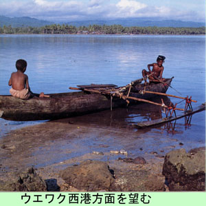

|
第５６ ボイキン残留隊長
 ジャングルの暗い夜に朝が来て、朝の７時頃になると、どこからか小鳥が飛んで来て、将校室の近くの木に止まって良く鳴きました。『ドウデモイイヨ、ドウデモイイヨ』と、毎朝来て鳴いた。私どもはまた来たと、ささやきながら耳をすまして聞いていました。小鳥 の鳴き声は、私どもには、そんな環境にありましたから、その様に聞こえました。 そんな生活が暫く続いていましたが、まもなく、宮永新作大尉は高橋見習士官を従えてアイタペ作戦に出て行った。また、佐藤さんと 渡辺君もセピック河流域の何処かの戦線に出陣して行った。将校室には私が一人だけ残留することになりました。『ボイキン残留隊長』 に任命された訳です。第一線の作戦には出陣できない体力のない病弱者のみをボイキンに残したという訳です。この兵士たちの自滅を待 ち、彼等に『死に水』を与えてやるのが、私に与えられた、惨めで嫌な任務でした。 私は午後３時頃になると、椰子の葉で作った小屋に、寝ている兵隊達を見回り、彼等に勇気を与え励ましていました。これが私の残酷 な日課でした。医薬品はない、食料もない、勿論軍医さんも衛生兵もいない。彼等の『死』を黙って待つしかないのであります。それで も、いつ？敵がここボイキンを攻撃してくるかもしれないそんな状況でした。 そんなある日の事、床に伏せていた秦野上等兵が、巡回に来た私の姿をめざとく見つけ 『山口中尉殿はまだ居たんですか？我々に構わず、早く山に入って下さい』という。我々に構わないで早く逃げてくれという。この声を聞 いた時は一瞬嬉しかった。が、すぐ悲しくなってしまった。その声を聞き、すかさず 『馬鹿なことを言うな。早く良くなって、俺と一緒に山に行くんだ』と、言って彼等を慰め元気を付けてやりました。 この秦野上等兵の顔は４０年たった今でも、はっきり記憶にあります。彼は３０歳をこした應召の機関兵で、元気なときはがっちりした大 柄の兵隊さんでした。 残留者のいる小屋は、ジャングルがまばらに開けていて、太陽が良く降り注ぐ良い場所にありました。ある時などは、全員が小屋の外に 出て、真っ裸になって、兵隊達は虱退治をしていた事もありました。心が部下と通じ合っていたので、外の皆さんが考えるほど陰惨な任務 とも思いませんでした。何日かたち、とうとう、ボイキンの残留隊長という任務を解除され、次の作戦地ベリンガに、部下４人を指揮し転 進することになりました。 |